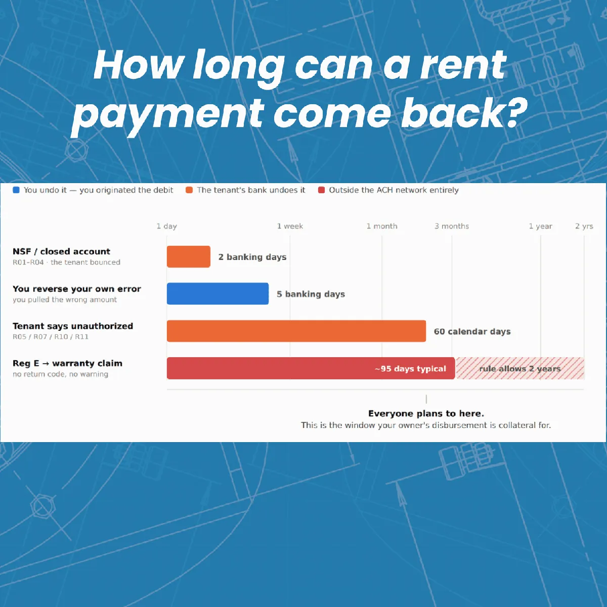

Property management, in plain English.
Longer takes on the industry: software, M&A, NARPM, fair housing, and the occasional honest rant. 89 posts and counting.

The ACH Rules Every Property Manager Should Understand (But Almost Nobody Does)
A property manager's plain-English breakdown of how rent payments and owner disbursements actually move through ACH — and why a reversal can surface two years later.
Read the post →
KKR is Insourcing Property Management. Here's Why That Should Worry You Too.
KKR just pulled ~10,000 SFR doors from Avenue One and is handing them to an in-house subsidiary — four property management partners are losing the business, and only one is being k
Read →Point Solutions vs. One Platform: The Real Cost of Property Management Software
Based on a recent podcast where Steven Rea and I go back and forth on all-in-one software vs. point solutions, maintenance efficiency, and whether owners deserve rock-bottom repair
Read →
15 Email Systems that Actually Scale for Property Managers
I run three active businesses and my inbox sits at zero most days. Here's the exact system — notifications off, one-touch processing, and a few habits most operators are missing.
Read →Vendor Rebates Are Kickbacks, Actually (sorry, Todd)
Todd Ortscheid says disclosed vendor rebates are ethical. I say a kickback by any other name is still a kickback — and I brought RESPA, the Anti-Kickback Statute, and NARPM's own C
Read →Renter Leads, Zillow, and the Database You're Probably Not Building
I spent years calling renter leads worthless. A conversation with RentEngine's Alex Stringfellow changed my mind: here's why a renter lead is worth $24–90.
Read →
I'm Breaking Up With My iPhone (and you should too)
I thought I had my phone habit under control — notifications off, addictive apps deleted, a year-long news blackout. Then I left it on my desk for two hours and nearly lost my mind
Read →
A New Rule for AI "News": Two Details or It Doesn't Count
Every property management software company on earth is releasing AI features soon, at some price. The problem? Most announcements skip the two details operators actually need: when
Read →
Captive Insurance for SFR: What Property Managers Should Ask Before Buying In
Captive insurance lets rental owners share in underwriting profit. Here's how it works for property managers, plus where I pushed back hard on the pitch.
Read →The 75-Door Trap: What Keyrenter's CEO Taught Me About Why PM Companies Stall
Nate Tew, CEO of Keyrenter, on why most PM companies stall at 75–100 doors, the Model 300 framework, and why "bad owner" stories are usually about management.
Read →
PM Trends Report 2026: My Top 10 Favorite Findings from 500 Small Landlords
Last December, Jordan and I commissioned Harris Poll to survey 500 small landlords about what they actually think about property managers. Here are the top 10 findings from PM Tren
Read →
The AI Trap for Property Management Owners
Sam Eddinger built hundreds of his own processes, then became the bottleneck. On my podcast we dug into the AI trap facing PM owners, and how to organize around it.
Read →
From Trust to Authority: What the 2026 NARPM Keynotes Were Really Telling Us
Jennifer Ruelens, Marcus Sheridan, and John DiJulius anchored the main stage at NARPM Broker/Owner 2026. Three keynotes, three different framings, one underlying argument: property
Read →
Big Things Coming From LeadSimple: A Recap From LSU 2026
A first-hand recap of LeadSimple's LSU 2026 keynote — the product roadmap, what's already live in your account, and why their measured approach to AI is the right call.
Read →
NARPM 2.0: Our Industry’s National Association Is Reinventing Itself
For 30+ years, NARPM has been stuck just under 6,000 members while our industry exploded. NARPM 2.0 is the most ambitious overhaul in the association's history — paid staff handlin
Read →
The Zillow Squeeze: How Standard Features Keep Becoming Paid Upgrades
A phone number on a rental listing is not a feature — it's been standard for as long as rental listings have existed. Zillow just quietly made it a paid upgrade. Here's why this ma
Read →
What I Saw Walking the NARPM Broker/Owner Expo Floor: AI, Hype, and Tools Worth Paying Attention To
Eighty-plus vendors. One enormous hall. Almost every booth promising AI-powered everything. Peter walks the NARPM Expo floor and shares what stood out (from the legacy giants to th
Read →
NARPM Sold Out Broker/Owner For the First Time, And You Could Feel It
NARPM's Broker/Owner Conference & Expo in New Orleans last month was the first in the organization's history to completely sell out. Over 1,300 attendees, 81 vendors, and a roo
Read →
The Three Best After-Parties at NARPM Broker/Owner 2026
The conference content was solid this year. But if you've been to enough of these, you know the real value happens after the keynotes wrap. Three after-parties stood out at NARPM 2
Read →
Google Just Quietly Banned a Bunch of Common Review Tactics. Here's What PMs Need to Know.
On April 16 and 17, Google quietly changed its Maps review policy in two ways that hit property managers harder than most. If your team runs review contests, asks owners to mention
Read →
I’m Mad About the Accounting Software We Use in Property Management
Every PM is the accountant, controller, and CFO of every property they manage. So why does our software leave us completely on our own the moment anything gets even slightly compli
Read →How to Sell a 220-Door Property Management Company (Without a Broker)
How Bri Leichliter sold her 220-door Cincinnati PM company with no broker: the Labor Day text, installment-sale structure, tax timing, and what she'd do differently.
Read →
Federal ESA Lawsuit Headed to Trial. What Property Managers Need to Know.
A federal lawsuit over a tenant's emotional support dog is headed to trial - and the implications for property managers are significant. The case involves denied accommodation requ
Read →
RPU: The Do-Or-Die Metric Every Property Manager Should Know
Revenue Per Unit is the single most important profitability metric in property management — and most operators don't track it. Here's how to calculate yours, how you stack up again
Read →
These 13 PM Software Companies Got an FTC Warning Letter
On December 8, 2025, the Federal Trade Commission sent warning letters to these 13 property management software providers, warning them that failure to provide rental property mana
Read →
Call Center vs. Personal Relationships: How Property Managers Should Communicate with Owners
There are four common ways to structure a property management company: Departmental, Portfolio, Pod (Squad), Hybrid. Each one changes how your team operates—and how rental owners e
Read →
OpenClaw is Going to Change Property Management
Something extremely strange is happening in AI right now. And unless you’ve been living under a rock, you’ve probably heard about it. For the past couple of yea
Read →
The Vendors Quietly Eating Your Margins
Some vendors embed themselves so deeply in your business that leaving feels impossible—while prices keep climbing. Here’s how to spot “tapeworm vendors” and fight back.
Read →
The Hidden Story Behind the PURE + HomeRiver Merger
Earlier this year, two of the biggest names in single-family rental property management (PURE and HomeRiver Group) merged to form a new company called PURE Home
Read →
Revenue Ceiling Calculation
If your property management company is adding new doors each month but growth feels stalled, you might be bumping into the growth ceiling. This post breaks down the formula behind
Read →
The Hardest Operational Problem in Property Management
Role design is one of the hardest (and most underrated) challenges in property management. As your company grows, even just by 10%, the way work is divided starts to break down. In
Read →
A Shocking Discovery About Owner Leads.
We thought most owner leads made their decision in a few weeks. Turns out, it’s closer to four months. After analyzing 100+ deals in our CRM, I realized we’ve been thinking about l
Read →
Why I Started My Property Management Newsletter
Four years ago, I started a property management newsletter with zero subscribers. No email list. No sponsors. No publishing schedule. Just a vague itch to try l
Read →
Rental Registries Are WRONG. Let’s Do Something About It.
The city of Clearlake, CA just passed a new rental registry and inspection ordinance. My own city, Columbus, is dangerously close to doing the same. These laws
Read →
The Easiest Customer: How Property Managers Can Grow Revenue Without Adding Doors
The easiest customer to sell to is one already buying from you. That simple truth powers entire industries. The oil change shop that offers to swap your wiper b
Read →
The Zillow Problem: Why Property Managers Should Worry
The Wake-Up Call Zillow has quietly become the biggest existential threat to property management, and they don’t even manage a single property. For years, most
Read →
Ask Me Anything (Literally): My AI Clone Helps Property Managers Get Answers Fast 🤖
I get a lot of DMs asking the same kinds of questions. “How do you handle owner churn?” “What’s the right time to hire a COO?” “Can you actually take a month of
Read →
Inside Crane: A Better Way for Property Managers to Learn, Connect, and Grow
A few years ago, I realized I was running my property management company in a vacuum. Sure, there were Facebook groups, conferences, and vendor webinars, but no
Read →
Running In-House Maintenance? You Need This Formula.
Running in-house maintenance? Here’s the formula you must know to stay profitable + plus the 3 hidden pitfalls that can quietly wreck your margins.
Read →
How Much is a Property Management Company Worth? Introducing: The M&A Report
For years, property management owners have been buying and selling companies in the dark—relying on rumors and broker guesses. The first-ever Property Management M&A Report cha
Read →
The Top 20 Largest Property Management Companies 2025
Below is a list of the top 20 largest residential property management companies in the US. The figures are self-reported. Only 3rd party doors are counted. Data
Read →
The Property Management Trends Report
In 2017, The Iceberg Report (a comprehensive survey of property owners) found that only 30% of US rental properties were professionally managed. In 2024, I comm
Read →
PM Company Transaction Data
UPDATE: I just released the 2025 Property Management M&A Report , based on this data! Original Post: Nobody knows how much property management companies sell fo
Read →
Exclusive ReSeed Update: Interview with Brandon Laughridge
In the ever-evolving landscape of real estate investment, innovative models are reshaping how operators scale their businesses. One such model making waves is R
Read →
Notion Part 3: Using Notion AI for Instant Answers
This article is part 3 of my mini-series about Notion! Here’s the list of articles: For total beginners : Why I’m obsessed with it, and how to get started with
Read →
Notion Part 2: Your Most Valuable Notion Page
This article is part 2 of my mini-series about Notion! Here’s the list of articles: For total beginners : Why I’m obsessed with it, and how to get started with
Read →
Notion Part 1: 10 Tips to Get Started
I get a LOT of questions about Notion. I thought it might be helpful to write a mini-series about Notion and how we use it. This series is divided into 3 sectio
Read →
Success Story: New PM Company
If you’ve been subscribed to this newsletter for a bit, you may remember when I offered up some free coaching spots to any property management companies with 10
Read →
Your Property Management Company Market Penetration
At the end of last year, I watched an interesting video from Marc Cunningham where he explained why he does not plan to enter any new markets with his property
Read →
The Top 20 Largest Property Management Companies 2024
[ { "shape": "underline", "isFront": false, "isAnimationEnabled": false, "animation": "draw", "duration": 0.5, "direction": "right", "color": { "type": "THEME_C
Read →
Using ChatGPT for Sales Insights
I started playing around with ChatGPT’s new data analysis capabilities last week and was amazed at what is now possible. Note: This requires ChatGPT 4.0 (paid).
Read →
The Easy Way to Start Using LeadSimple Process
Excited to get started using LeadSimple, but unsure how to proceed? I get a lot of questions about this, and figured it might be useful for me to summarize and
Read →
Property Management Business Brokers
This is a list of business brokers that specialize in property management companies: Marshall Hatfield with eXp Commerical Patrick Hurley with PM Broker Group B
Read →
List of LeadSimple Consultants
I often get asked for help with LeadSimple Process/Workflow buildouts or troubleshooting. That isn’t something I offer, so I’ve created a reference list of folk
Read →
Running Buildium Rental Applications in LeadSimple
If you’re trying to use LeadSimple for your rental application process, you may have noticed that it does not pull rental applications in automatically from Bui
Read →
Disentangling Operations (from Customer Service)
My property management company (we manage about 700 units) is filled with highly capable “get it done” types. They move fast, they don’t take no for an answer,
Read →
How To Design A Process People Actually Want To Use
Here’s a collection of concepts that I use when thinking about building a great process: Have realistic expectations Confirm you actually need a true Process (v
Read →
Property Management Communities
A good community can alter the course of your business forever. The goal with this post is to create a directory of property management communities where you ca
Read →
Comparison of Property Management Franchises
The Space There are 4 active residential property management franchises: Real Property Management (RPM) Property Management, Inc (PMI) Keyrenter All County I ha
Read →
Building a New Property Process in Real-Time
I recently hosted a live event where I rebuilt our New Property process in real-time. I hosted it as a Zoom Webinar and capped it at 25 people - which maxed out
Read →
Getting Added as Additionally Insured
If you own a property management company, you know how frustrating it is to get ALL your property owners to add you to their insurance correctly as “Additional
Read →
Directory of Long-Form SMB/RE Writers
The Tweet Recently I found myself longing for deeper, long-form content from the SMB and RE community: #block-da021863375a4f103b46 { } #block-da021863375a4f103b
Read →
The mini-Berkshires (Micro-PE)
My business partner was amazed to learn it was possible to invest in mini-Berkshire type companies (micro-PE). He asked for a list, so I shared the few that I k
Read →
Can I Hire a Property Manager for My Own House?
The idea of home property management , estate management, or hiring a property manager for a house you own and live in, has been around for quite a while. Leavi
Read →
How to Market Your Property Management Business
I’ve learned a few things about how to successfully market property management services to customers over the course of the last 9 years. These skills, hard won
Read →
Three Ways to Organize a Property Management Company
Here are the 3 common ways to organize a property management company as it grows beyond a few employees. I’ve listed the pros and cons of each. I run my company
Read →
Property Management Software That Works with Zapier
List of property management software that works with Zapier.
Read →
Book Recommendations for Property Management Business Owners
I’m often asked for book suggestions, so I figured I would collect a list of my top books in one place. Let me caveat this list by stating I’ve never read a boo
Read →
Valuing a Property Management Company
Update: We now have actual data based on real transactions. Check out the 2025 Property Management M&A Report for all the details. Original Post: I previously w
Read →
Property Management Fees
What’s the right way to compensate a property manager? Percentage of Collected Rents The traditional structure is a percentage of collected rent (somewhere arou
Read →
Revenue Opportunities for Property Managers and Owners
Is it possible to easily add revenue streams to your existing real estate or property management business? Yes! In this post I’m collecting a list of value-add
Read →
VC-Backed Property Management Companies
[updated October 2025] The residential property management space is awash in venture capital, with nearly $1B raised over the last 10 years or so. This list is
Read →
How To Work On Your Business
Sounds easy, doesn’t it? “Work on your business, not in it.” It’s not easy. These are thoughts, ideas and concepts that have actually worked for me as I extrica
Read →
Security Deposit Alternatives & Tenant Screening Innovation
Security deposits and tenant screening are two fascinating areas of real estate that tech companies are attempting to disrupt. I thought it might be useful to p
Read →
My Top 5 Property Management Podcasts
UPDATED: September 2023 I’ve listened to a lot of podcasts about property management. I even host one of my own . But today I’m going to share with you a list o
Read →
Important New Laws Affecting Central Ohio Landlords
There are several new pieces of local legislation that affect landlords who own residential property in the central Ohio area. Similar legislation is already ma
Read →
Introduction to Residential Property Management (For Buyers & Founders)
This is a high-level overview of the residential property management (PM) industry, written for people interested in buying or building a PM company. This is ev
Read →
No-Code Tools & Checklists in Property Management, Part 2
My original article about how we use process automation in our property management business got a lot of attention, so I promised a follow-up post with more det
Read →
How we use no-code tools in our property management business
Property management is a never-ending series of small but important tasks . To succeed, we must complete all the tasks efficiently and in the right order. This
Read →
Customer Experience is the new “Relationships”
Every day I hear some salesperson or business owner talking about how “relationships” are so important to their business. They want to have relationships with t
Read →
Your Secret Weapon: Task Capture
Unfortunately, life (and particularly work) is a series of tasks . If you execute tasks promptly, correctly, and proactively, you can reduce overall task volume
Read →
The Power of Anti-Visualization
A useful tool to motivate yourself is to picture in your mind exactly what you DON’T want to happen. If you are not making progress in a certain area of your li
Read →
Schedule or Checklist?
When making improvements to your life by way of adjusting your daily or weekly routines, think carefully about how you choose to implement them. Personally I do
Read →
Rental Property Expense — Turn Cost
The largest frequent expense you will incur on a residential rental property is the “turn”, which is the cost to get the unit ready for new tenants. Many new in
Read →
So You Want To “Start A Company”
Something nobody told me when I was first learning about how to start a business is that you must first determine what kind of business you want to own. There a
Read →
Making Decisions: Decisive Action vs. Pondering
Many times a day, you will be requested to make decisions on various topics. With experience I have found that certain types of decisions benefit greatly from “
Read →
What Actually Matters When Screening Tenants? Nobody Knows.
In the world of residential rental property, there’s an endless amount of boring, repetitive articles written about “tenant screening”— how best to filter out “
Read →
Dominate Your Competition (By Correctly Identifying Task Types)
In life and in business, you will come across three major types of tasks. To succeed, it’s critical that you first identify what category of task you are dealin
Read →
How To Calculate Your Average Tenancy Length
If you own or manage rental property, you’ve probably wondered about your “average tenancy length” — that is, how long do your tenants stay in the property, on
Read →Never miss a post.
The best of the blog lands in the newsletter twice a week, read by 20,000+ PM professionals.
Subscribe to the newsletter